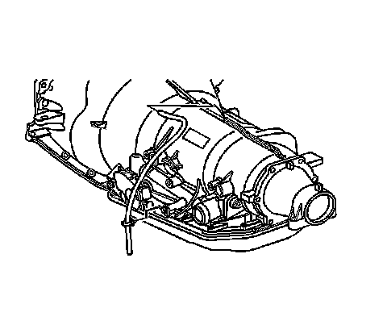

Vent Hose
Vent Hose
Removal Procedure

1. Remove the vent hose clip.
2. Remove the vent hose from the transmission vent.
Installation Procedure
1. Install the vent hose to the transmission.
2. Install the vent hose to the clip.
Notice: Refer to Fastener Notice.
3. Install the bolt and the clamp.
Tighten the bolt to 10 N.m (89 lb in).